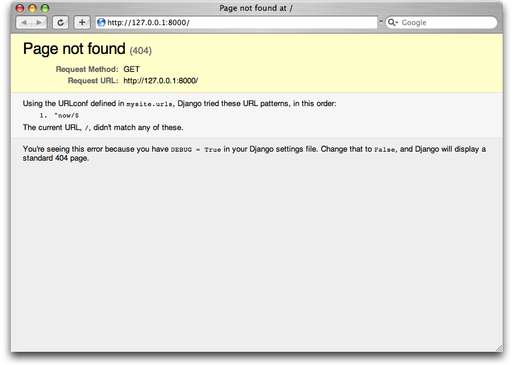

4 Pages app
4.1 Objetivos
- Desplegar la app Pages con una página homepage y una about
- Vistas basadas en clases y plantillas (templates)
4.2 Configuración inicial
- Crear un nuevo directorio para el código
- Instalar Django en un nuevo entorno virtual
- Crear un nuevo projecto Django
- Crear una nueva app
pages - Actualizar
settings.py
$ cd ~/Desktop
$ mkdir pages
$ cd pages
$ pipenv install --python 3.10
$ pipenv install django
$ pipenv shell
(pages) $ django-admin startproject pages_project .
(pages) $ python manage.py startapp pages # ó (pages) $ django-admin startapp pages
FICHERO: pages_project/settings.py
...
INSTALLED_APPS = [
'pages.apps.PagesConfig', # new
...
- Arrancar servidor
(pages) $ python manage.py runserver
4.3 Plantillas (Templates)
- Cada framework precisa generar de alguna manera ficheros HTML. En Django, la aproximación es usar plantillas (templates) de tal forma que los archivos HTML individuales puedan ser servidos por una vista a la página web especificada por la ruta (URL).
- Ruta (URL).- Controla la ruta inicial
- Vista (View).- Contiene la lógica (el qué). En páginas relacionadas con BD es lo que hace la mayor parte del trabajo en cuanto a decidir qué datos estarán disponibles para la plantilla.
- Plantilla (Template).- Contiene el HTML.
4.3.1 Dónde colocar el directorio de plantillas
- Por defecto, Django mira dentro de cada app en busca de plantillas.
- En la app
pagesse creará una estructura de directorios como la siguiente con la plantillahome.htmlcolgando de ella:
└── pages
├── templates
├── pages
├── home.html
- La otra aproximación es hacer un directorio de plantillas común a todas las apps.
- Hay que cambiar
settings.pypara que busque, también en este directorio, las plantillas que se necesiten.
(pages) $ mkdir templates
(pages) $ touch templates/home.html
FICHERO: pages_project/settings.py
TEMPLATES = [
{
...
'DIRS': [str(BASE_DIR.joinpath('templates'))],
...
},
]
str(BASE_DIR.joinpath('templates'))toma el directorio base y le abrega el directoriotemplatespara finalmente construir una cadena con el path completo. También se podría utilizar la funciónos.path.joinque une el path base de la aplicación (BASE_DIR) con el nuevo directoriotemplatesañadiendo/según sea conveniente. Hemos de importar la libreríaos(import os) para hacer uso de esta segunda función.
FICHERO: templates/home.html
<h1>Homepage</h1>
- Ahora es el turno de la ruta y la vista
4.4 Vistas basadas en clases (Class-Based Views)
- Las primeras versiones de Django solo incluían vistas basadas en funciones, pero los desarrolladores pronto se encontraron repitiendo los mismos patrones una y otra vez.
- Sin embargo, no había una manera fácil de ampliar o personalizar estas vistas.
- Django introdujo vistas genéricas basadas en clases que facilitan el uso y también amplían las vistas que cubren casos de uso comunes.
- En el ejemplo se usará la clase
TemplateViewincorporada para mostrar la plantilla.
FICHERO: pages/views.py
from django.views.generic import TemplateView
class HomePageView(TemplateView):
template_name = 'home.html'
- Distíngase cómo se ha puesto en mayúsculas la vista, porque ahora es una clase, y cómo ésta es descendiente de la clase base
TemplateView.
4.5 URLs
- El último paso es actualizar las
URLConfs.
FICHERO: pages/urls.py
from django.urls import path
from .views import HomePageView
urlpatterns = [
path('', HomePageView.as_view(), name='home'),
]
FICHERO: pages_project/urls.py
from django.contrib import admin
from django.urls import path, include # new
urlpatterns = [
path('admin/', admin.site.urls),
path('', include('pages.urls')), # new
]
- Este patrón es casi idéntico al que se hizo anteriormente, con una sola diferencia; cuando se usan vistas basadas en clases, siempre se añade
as_view()al final de su nombre. - Iniciar el servidor para ver la nueva página de inicio.
4.6 Añadir una página "Acerca de..."
- Crear un nuevo fichero de plantilla
(pages) $ touch templates/about.html
FICHERO: templates/about.html
<h1>Acerca de...</h1>
- Crear una nueva vista para la página
FICHERO: pages/views.py
from django.views.generic import TemplateView
class HomePageView(TemplateView):
template_name = 'home.html'
class AboutPageView(TemplateView):
template_name = 'about.html'
- Conectar la vista con la ruta
FICHERO: pages/urls.py
from django.urls import path
from .views import HomePageView, AboutPageView # new
urlpatterns = [
path('about/', AboutPageView.as_view(), name='about'), # new
path('', HomePageView.as_view(), name='home'),
]
- Lanzar
http://localhost:8000/about
4.7 Extendiendo Plantillas
- El poder real de las plantillas es la posibilidad de ser extendidas.
- En las mayoría de webs encontramos contenido que se repite en cada página:
- Hagamos una página canónica que será heredada por las demás
- Django tiene un lenguaje mínimo de plantillas para añadirles enlaces y lógica básica
- Los tags de las plantillas tienen la forma
{% cualquier_cosa %}
-
Para añadir enlaces a nuestro proyecto podemos usar la etiqueta de plantilla
urlincorporada que toma un patrón de URL como argumento. -
El tag
urlutiliza los nombres opcionales de URL para crear enlaces automáticos por nosotros. -
Por ejemplo:
{% url 'home' %}
FICHERO: templates/base.html
<header>
<a href="{% url 'home' %}">Home</a> |
<a href="{% url 'about' %}">About</a>
</header>
{% block content %}
{% endblock content %}
-
Al final se añade un tag
blockllamadocontent. Los bloques pueden ser reescritos por las vistas descencientes. -
El lenguaje de plantillas de Django dispone de un método
extendsque puede usarse para actualizarhome.htmlyabout.htmly así extender la plantillabase.html.
FICHERO: templates/home.html
{% extends 'base.html' %}
{% block content %}
<h1>Homepage</h1>
{% endblock content %}
FICHERO: templates/about.html
{% extends 'base.html' %}
{% block content %}
<h1>About page</h1>
{% endblock content %}
4.8 Tests
-
Importancia de los tests
-
Jaco Kaplan-Moss: "Code without tests is broken as designed." (El código sin pruebas se rompe según se diseñó)
-
Django nos brinda herramientas para escribir y correr tests.
FICHERO: pages/tests.py
# pages/tests.py
from django.test import SimpleTestCase
class SimpleTests(SimpleTestCase):
def test_home_page_status_code(self):
response = self.client.get('/')
self.assertEqual(response.status_code, 200)
def test_about_page_status_code(self):
response = self.client.get('/about/')
self.assertEqual(response.status_code, 200)
- Se usa
SimpleTestCaseya que no estamos usando una base de datos. Si estuviéramos usando una base de datos, en su lugar usaríamosTestCase. - Luego se realiza una comprobación de si el código de estado para cada página es 200, que es la respuesta estándar para una solicitud HTTP exitosa.
- Esa es una manera elegante de garantizar que una página web determinada realmente existe, pero no dice nada sobre su contenido.
- Para ejecutar los tests:
(pages) $ python manage.py test
System check identified no issues (0 silenced).
..
---------------------------------------------------------------
Ran 2 tests in 0.014s
OK
4.9 Git, GitHub, GitLab y Bitbucket
(pages) $ git init
(pages) $ git status
(pages) $ git add -A
(pages) $ git commit -m 'Commit inicial'
4.10 Local vs Producción
- Código en producción
- Código implementado en un servidor externo para que cualquiera pueda ver el sitio web.
- Hay muchos proveedores de servidores disponibles, pero usaremos Heroku porque es gratis para pequeños proyectos, ampliamente utilizado y tiene un proceso de implementación relativamente sencillo.
4.11 Heroku
- Se puede obtener una cuenta gratuita de Heroku en su sitio web.
- Ahora se necesita instalar la interfaz de línea de comando (CLI) de Heroku para poder implementar desde la línea de comando.
- Queremos instalar Heroku globalmente para que esté disponible en toda nuestra computadora.
- Si se instala Heroku dentro de un entorno virtual, solo estará disponible allí.
- Instalar Heroku según el sitio web de Heroku
- Arch Linux
- Este paquete está mantenido por la comunidad y no por Heroku.
$ yay -S heroku-cli
(pages) $ heroku login
Enter your Heroku credentials:
Email: will@wsvincent.com
Password: *********************************
Logged in as will@wsvincent.com
4.11 Ficheros adicionales
-
Se necesitan hacer cuatro cambios al proyecto para desplegar en Heroku:
-
actualizar el archivo
Pipfile.lock - hacer un nuevo archivo
Procfile - instalar
gunicorncomo servidor web -
hacer un cambio de una línea al archivo
settings.py -
Especificar la versión de Python que se está usando en
Pipfile
# Pipfile
[requires]
python_version = "3.9"
Luego ejecutar pipenv lock para generar el archivo Pipfile.lock apropiado.
(pages) $ pipenv lock
- Heroku busca en
Pipfile.lockinformación sobre el entorno virtual. - A continuación crear un
Procfileque es específico para Heroku.
FICHERO: Procfile
web: gunicorn pages_project.wsgi --log-file -
- Esto indica que se use el fichero
pages_project.wsgiexistente pero congunicorn, que es un servidor web adecuado para la producción, en lugar del propio servidor de Django; que por otro lado aún tenemos que instalar.
(pages) $ pipenv install gunicorn
El último paso es un cambio de una línea a settings.py.
FICHERO: pages_project/settings.py
# pages_project/settings.py
ALLOWED_HOSTS = ['*']
-
El parámetro
ALLOWEDHOSTSrepresenta los nombres de host/dominio que nuestro sitio Django puede servir. Esta es una medida de seguridad para evitar los ataques de cabecera de host HTTP, que son posibles incluso bajo muchas configuraciones de servidores web aparentemente seguras. -
Sin embargo, se ha utilizado el comodín asterisco
*, que significa que todos los dominios son aceptables para mantener las cosas simples. -
En un sitio Django de nivel de producción, se enumeran explícitamente los dominios que están permitidos.
-
Usar
git statuspara comprobar nuestros cambios, añadir los nuevos archivos, y luego confirmarlos:
(pages) $ git status
(pages) $ git add -A
(pages) $ git commit -m "Actualiza para el despliegue en Heroku"
(pages) $ git push -u origin master
4.12 Despliegue
- Crear una nueva aplicación en Heroku y enviar el código
- Añadir un "hook" remoto de git para Heroku
- Configurar la aplicación para ignorar los archivos estáticos
- Iniciar el servidor de Heroku para que la aplicación esté activa
- Visitar la aplicación en la URL proporcionada por Heroku
Crear una nueva aplicación de Heroku, desde la línea de comandos con heroku create
(pages) $ heroku create
Creating app... done,
https://cryptic-oasis-40349.herokuapp.com/ | https://git.heroku.com/cryptic-oasis-40349.git
Sólo queda hacer un conjunto de configuraciones de Heroku, que son decirle a Heroku que ignore los archivos estáticos como CSS y JavaScript que Django por defecto intenta optimizar por nosotros.
Añadir un “hook” para Heroku dentro de git
- Git almacenará tanto la configuración para enviar el código a GitHub como a Heroku.
(pages) $ heroku git:remote -a cryptic-oasis-40349
Configurar la aplicación para ignorar los archivos estáticos
- Hay que decirle a Heroku que ignore los archivos estáticos como CSS y JavaScript que Django por defecto intenta optimizar para nosotros (se verá más adelante).
- Por ahora sólo hay que ejecutar:
(pages) $ heroku config:set DISABLE_COLLECTSTATIC=1
- Ahora ya podemos enviar nuestro código a Heroku.
(pages) $ git push heroku master
Iniciar el servidor de Heroku para que la aplicación esté activa
- Se puede utilizar el nivel más bajo,
web=1, que también resulta ser gratuito.
(pages) $ heroku ps:scale web=1
Visitar la aplicación en la URL proporcionada por Heroku
- Vistiar algo como https://cryptic-oasis-40349.herokuapp.com ó https://cryptic-oasis-40349.herokuapp.com/about/.
- También puede utilizarse el comando 'heroku open' que abrirá el navegador con una pestaña a nuestra app.
4.13 Errores 404
- En las URLconf anteriores, se han definido varios patrones URL. ¿Qué pasaría si se solicita una URL diferente a las recogidas en URLconf?
- Para averiguarlo, probar ejecutar el servidor de desarrollo Django e intentar acceder a una página Web como
http://127.0.0.1:8000/hello/ohttp://127.0.0.1:8000/does-not-exist/. Se debería ver el mensaje "Page not found". (Es linda, ¿no? A la gente de Django seguro le gustan los colores pasteles). Django muestra este mensaje porque se solicitó una URL que no está definida en URLconf.

- La utilidad de esta página va más allá del mensaje básico de error 404; nos dice también, qué URLconf utilizó Django y todos los patrones de esa URLconf. Con esa información, tendríamos que ser capaces de establecer porqué la URL solicitada lanzó un error 404.
- Naturalmente, esta es información importante sólo destinada al programador. Si esto fuera un sitio en producción alojado en Internet, no quisiéramos mostrar esta información al público. Por esta razón, la página "Page not found" sólo se muestra si el proyecto en Django está en modo de depuración (debug mode). Se explicará cómo desactivar este modo más adelante. Por ahora, todos los proyectos están en modo de depuración cuando se crean, y si el proyecto no lo estuviese, se retornaría una respuesta diferente.l